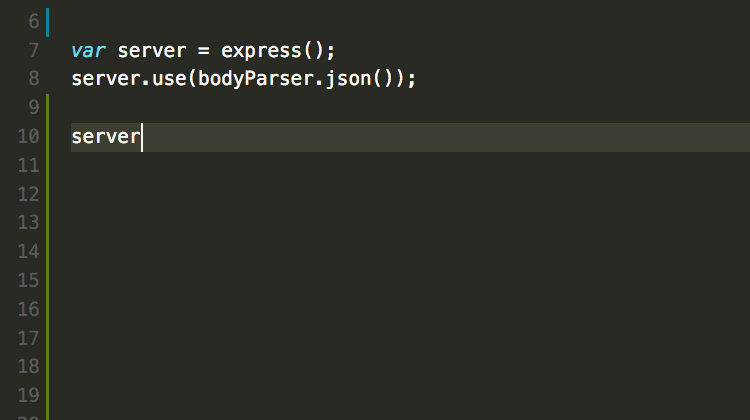
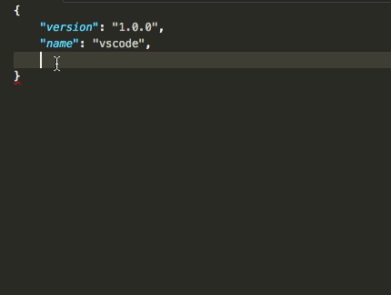
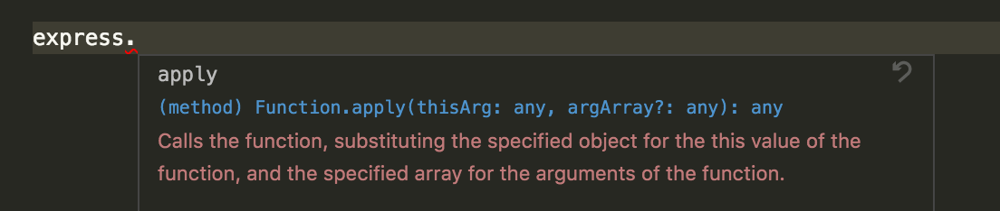
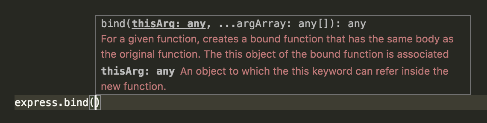
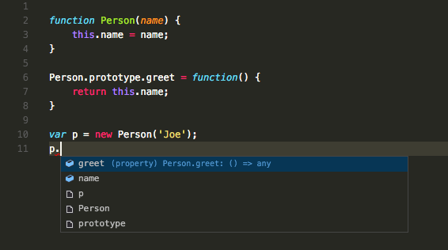
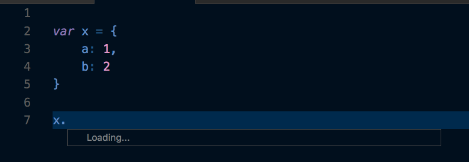
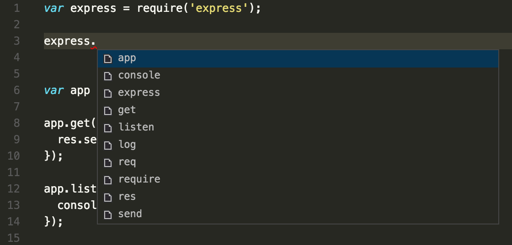

IntelliSense とは、メンバーの一覧、パラメーター ヒント、クイック ヒント、入力候補など多数の機能を指す総称です。その特徴から「code completion」「content assist」「code hinting」と呼ばれることもあります。

プログラミング言語の IntelliSense
箱から出したばかりの IntelliSense は JavaScript, TypeScript, JSON, CSS ,LESS, SASS に補完を提供します。この状態でも、それなりの言語で単語ベースの補完をサポートしますが、言語拡張機能をインストールすることでより豊かな IntelliSense を構成可能です。
以下は Marketplace で最も人気な言語拡張です。クリックして、ベストな拡張機能を探してください。
(編集メモ: 本家でここに人気言語4つが表示
IntelliSense の特徴
IntelliSense の機能は、セマンティクスとソースコードの分析に基づいて高度なコードな補完を生成する言語サーバーによって構成されています。生成された補完は IntelliSenseを通してリスト表示しますが、文字を続けることで IntelliSense がフィルターをかけて、メンバー(変数, メソッドなど)のより最適なリスト表示が可能になります。こうして出てきた項目は、Tab や Enter で確定します。
IntelliSense を起動するときには、エディタで⌃Space (Windows, Linux Ctrl+Space)もしくはトリガーになるような文字(javascript では ドット(.)などを入力してください。

Tip: IntelliSense はキャメルケースフィルターをサポートしています。ですから、メソッド名に大文字を入力するだけで、項目を限定することができます。例えば「createApplication」を表示するときは「cra」ですぐに表示可能です。
必要に応じて、入力中に IntelliSense をオフにすることもできます。IntelliSense 機能を無効化したり、カスタマイズしたりする詳細方法は Customizing IntelliSense を参照してください。
言語サービスに提供されるように、各メソッドのクイックヒントも表示します。

メソッドを選んだあと、パラメーター情報を提供しているのがわかるかと思います。

該当するものがあるとき、言語サービスはクイックヒントと
とメソッドシグネチャの基になる型を表示します。上の画像で、いくつかの any の種類を確認できます。JavaScript は動的であり型を強制しないので any 変数はどんな型でもいいことを示唆しています。
入力候補の種類
下の JavaScript コードで IntelliSense で入力候補の例を示しています。以下の画像を見てもわかりますが、候補とプロジェクトのグローバル識別子の両方を表示します。候補のシンボルが最初に表示され、続いてグローバル識別子を表示します。

IntelliSense は言語サーバーの候補, スニペット, 単純な単語のテキスト補完まど、さまざまな種類の補完を提供します。
 | メソッド, 関数, コンストラクター |
| 変数またはフィールド | |
| クラス | |
 | インターフェイス |
| モジュール | |
| プロパティまたは属性 | |
 | 値と列挙 |
 | 参照 |
 | キーワード |
| グローバル識別子 | |
 | 色 |
 | ユニット |
| スニペットプレフィックス | |
| 単語 | |
 | その他 |
(編集メモ: 無理やり日本語訳にしたのでわかりにくい
IntelliSense のカスタマイズ
設定とキーバインドを変更して IntelliSense の操作をカスタマイズできます。
設定
以下に示す例は既定の設定です。settings.json で設定を変更する場合は User and Workspace Settings の説明を参照してください。
|
既定では1つのウィジェットで修正候補と一緒にスニペットを表示します。これを editor.snippetSuggestions 設定で制御することが可能です。このウィジェットからスニペットを削除するには none に設定します。スニペットを一緒に表示する場合、その並び替えの方法は指定できます。上部("top") 下部("bottom“) アルファベット順("inline")です。デフォルトは "bottom“ です。
キーバインド
既定のショートカット設定を以下の例に示しています。keybindings.json の変更詳細は Key Bindings を確認してください。
Note: 以下の例は IntelliSense のごく一部設定をまとめています。実際の設定は File > 基本設定 > キーボードショートカット に移動して「suggest」を検索してください。
|
トラブルシューティング
IntelliSense が機能しないときは、言語サービスが実行されていない可能性があります。そんな場合 VS Code を再起動すればこの問題を解決できる可能性が非常に高いです。言語拡張機能をインストールしても IntelliSense 機能が不足している場合は、そのレポジトリで問題を確認してください。
Tip: JavaScript の IntelliSense 設定とトラブルシューティングについてはこちらを確認できます。
入手した言語拡張が IntelliSense 機能を完全にサポートするとは限りません。拡張機能の README で何がサポートされているのか確認します。もし、言語拡張に問題があると思ったら Marketplace で拡張機能を検索して、 サポートリンクを探してください。
次のステップ
IntelliSenseは VS Code の強力な機能の1つにすぎません。VS Code にさらに詳しくなりましょう。
- JavaScript - IntelliSense を最大限活用した JavaScript 開発
- Node.js - 実際の IntelliSense を Node.js チュートリアルで確認
- Debugging -アプリケーションデバッグの方法
よくある質問
Q: なぜ何の候補もないのですか?

A: これには様々な理由が考えられます。まず VS Code を再起動してみてください。それでも問題が解決しないは、言語拡張のドキュメントを参照してください。JavaScirpt特定のトラブルシューティングについては JavaScript language topic を参照できます。
Q: なぜ私の変数を見て候補を表示しないのですか? (なぜ有用な提案をしないのですか)

A: JavaScript で Typings ファイルが見つからないのが原因です。JavaScript language topic でこの問題を解決する方法を確認することができます。その他言語については拡張機能のドキュメントを参照してください。